Locket Gold
Hướng Dẫn Dùng Egern Up Locket Gold (by Gấu Apple)
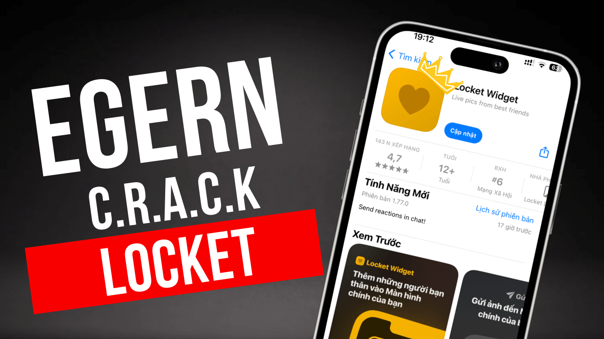Dùng Egern up locket gold, đây là cách cũng mới ra cách đây 1-2 tuần gì đấy mình không nhớ nữa của bạn Lea_qun được share tut ầm ầm trên các nhóm, thì hôm nay mình mới có thời gian để Re-up tut về.
Cách Dùng Egern Up Locket Gold
Egern App, đầu tiên muốn dùng egern up locket gold thì bạn phải có app này trước nhé, sau đó cũng tự tải Locket về máy và đăng nhập tài khoản Locket vào, nếu có sẵn rồi thì càng tốt chỉ cần tải .ipa Egern tại đây về và làm theo các bước sau đây:Vào Egern và dán URL sau (bước 2): https://aqvpn.me/scripts/locket.yaml
Các bước thực hiện lần lượt:
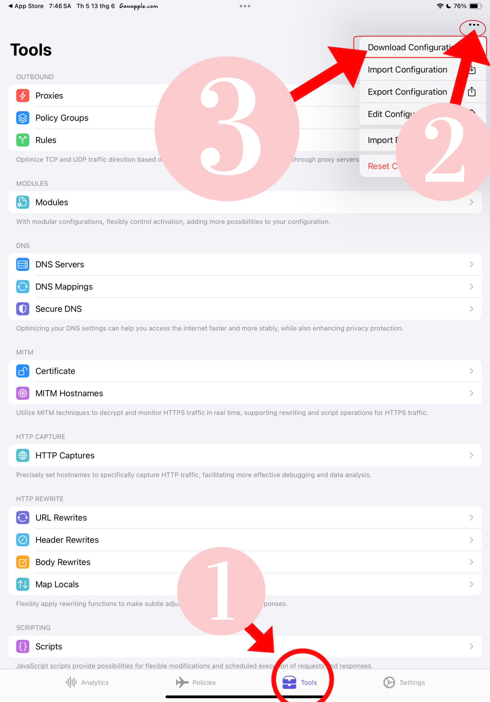 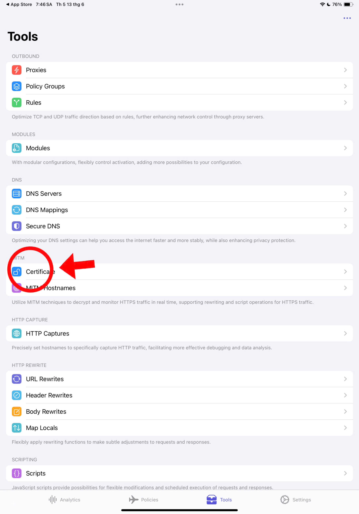 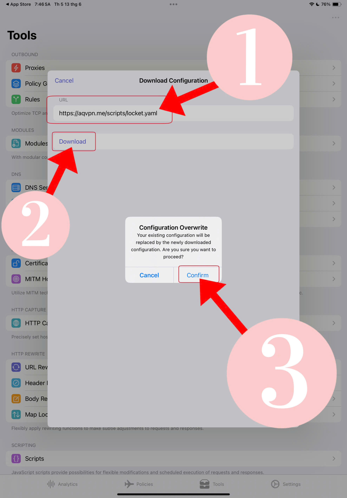 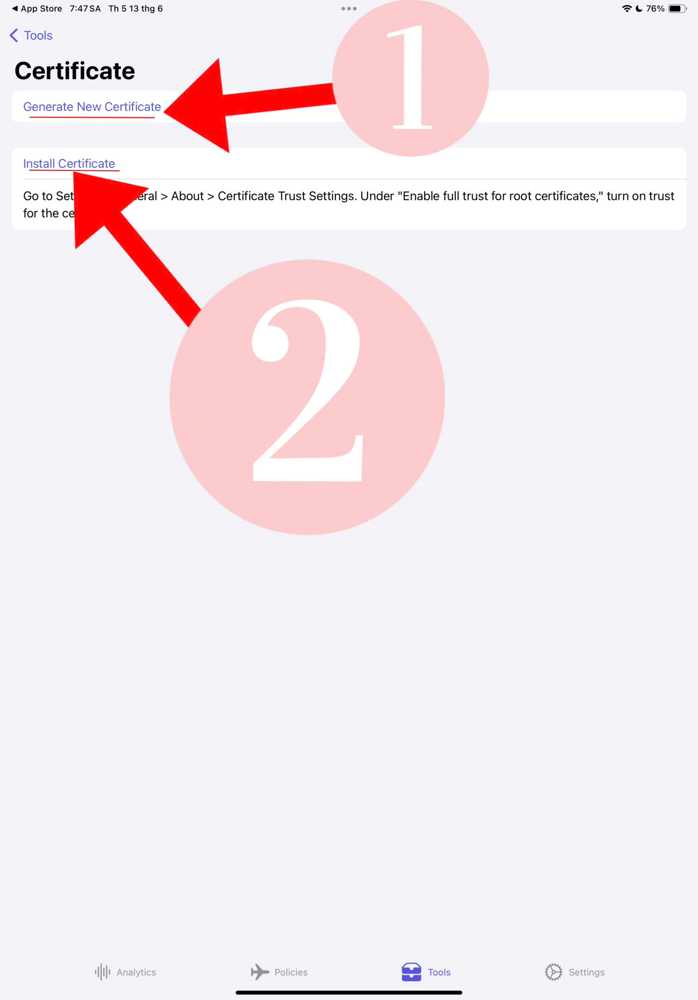 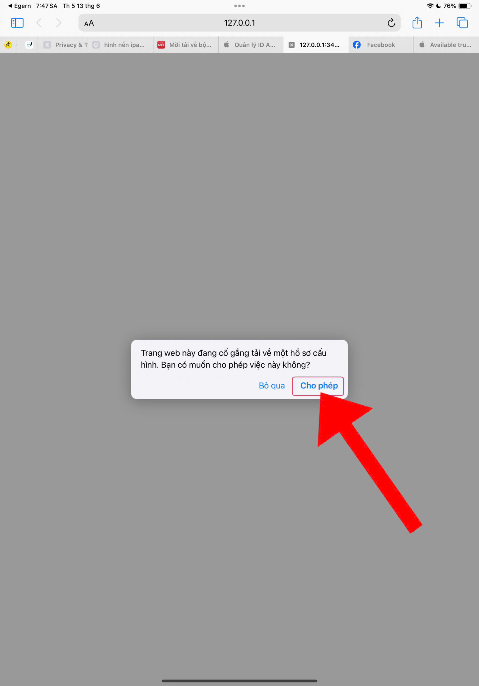 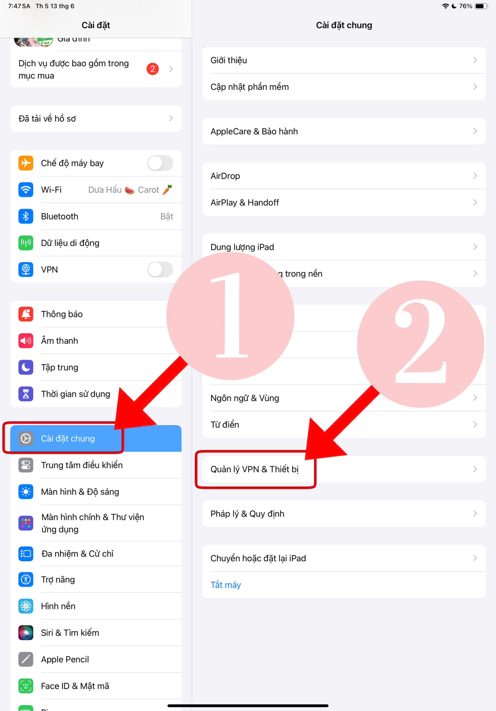 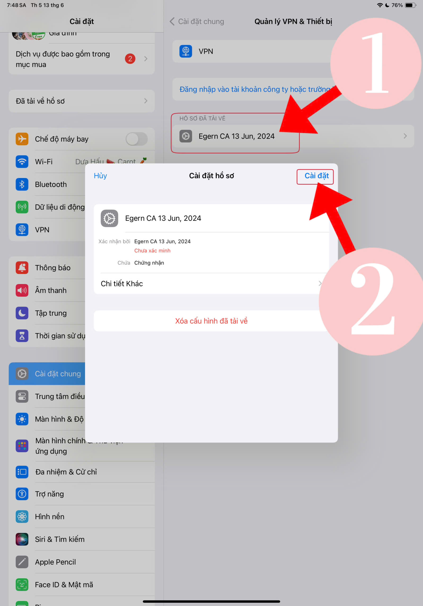 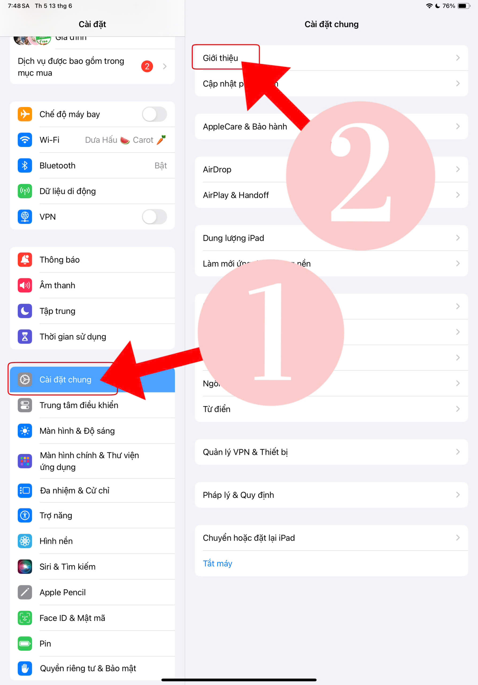 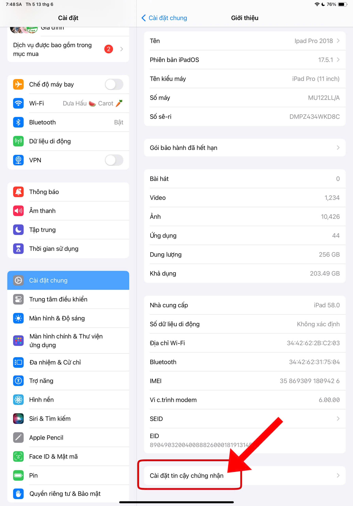 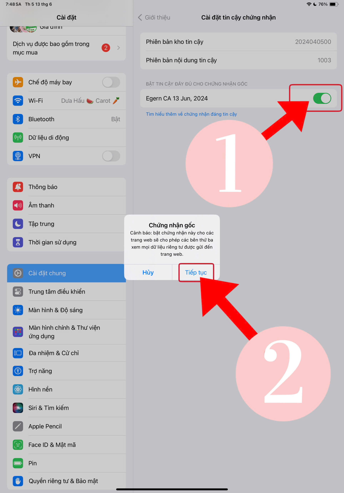 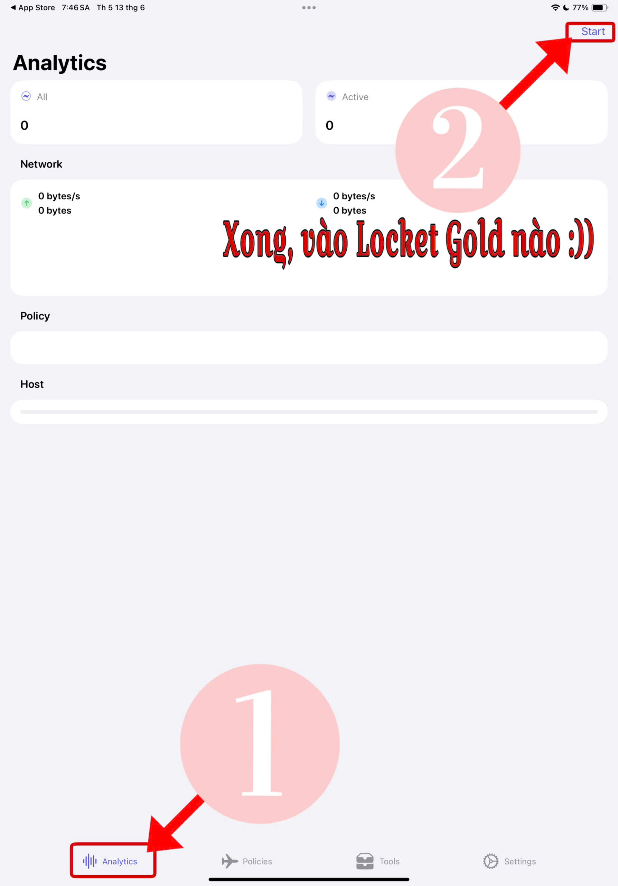 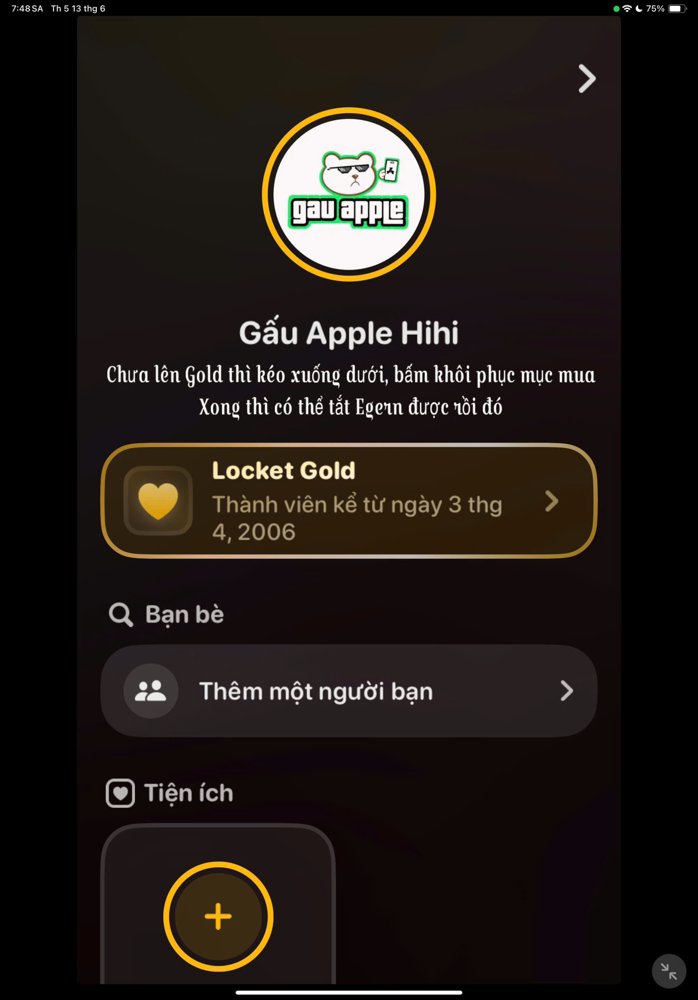
Sau khi đã up locket gold thành công thì bạn không cần phải bật egern nữa :v
Egern App nó khá giống với Shadowrocket, ngoài việc add Proxy và vô vàn tính năng liên quan tới VPN và mạng thì Egern app cũng có thể dùng để crack nhiều app khác như: Picsart, Alight motion, Kinemaster,…